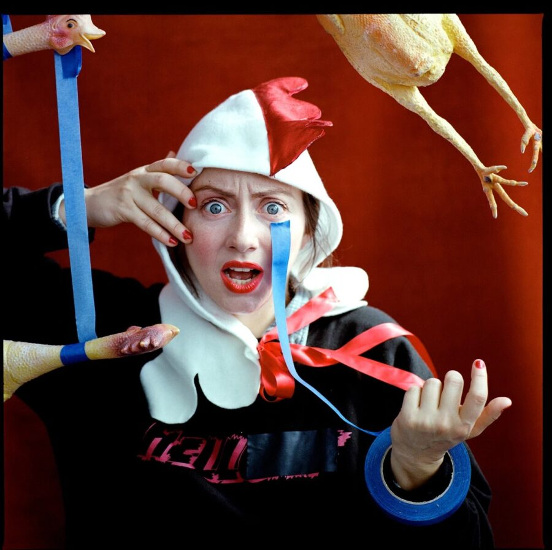

Alex Tatarsky: Sad Boys in Harpy Land
Confronting anguish through humor, Sad Boys in Harpy Land is a semi-autobiographical clown show about self-doubt and the artist’s journey. Through a series of existential vignettes, self-proclaimed “experimental clown artist” Alex Tatarsky fuses together fragments of their own story with those of equally tormented protagonists. Drawing on sources including Goethe, Dante, and Seinfeld, Tatarsky explores assumptions around identity to present a splintering coming-of-age tale that challenges the idea of individual malady and embraces the messiness of shared struggle. At once a guttural scream and a bellowing laugh, Tatarsky encapsulates the deranged experience of living in this world and finding art along the path.
Run time: 75 min.
Access Information
English CART captioning is provided for Saturday’s performance.
To request additional accessibility services like audio description, please contact us at Accessibility@mcachicago.org or 312-397-4076.
Created & Performed by Alex Tatarsky
Live Music by Shane Riley
Directed by Iris McCloughan